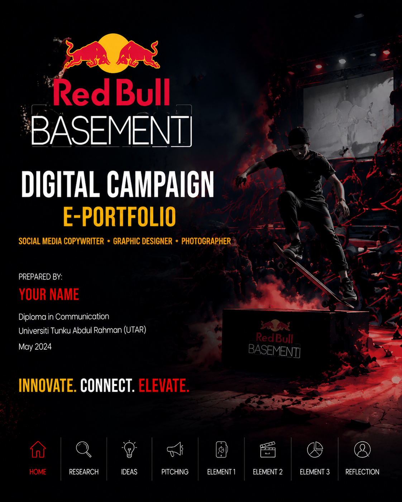
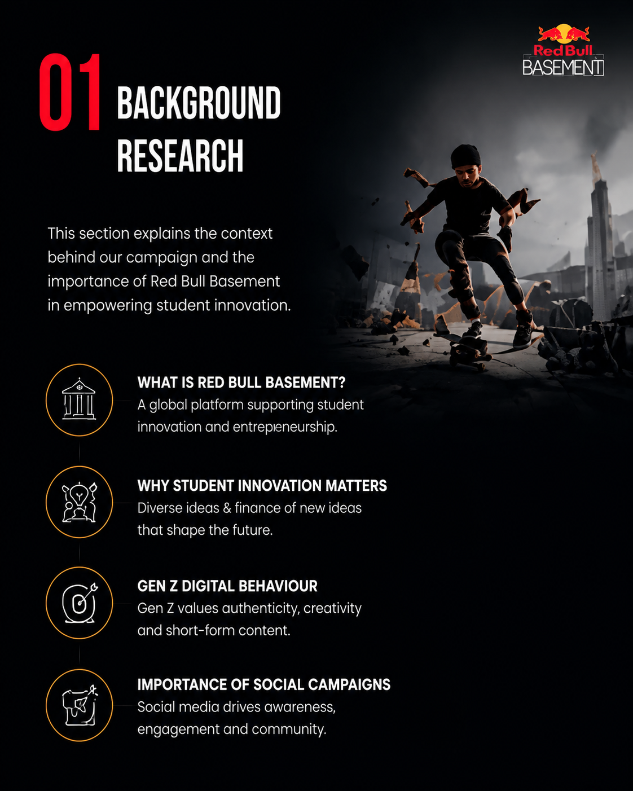
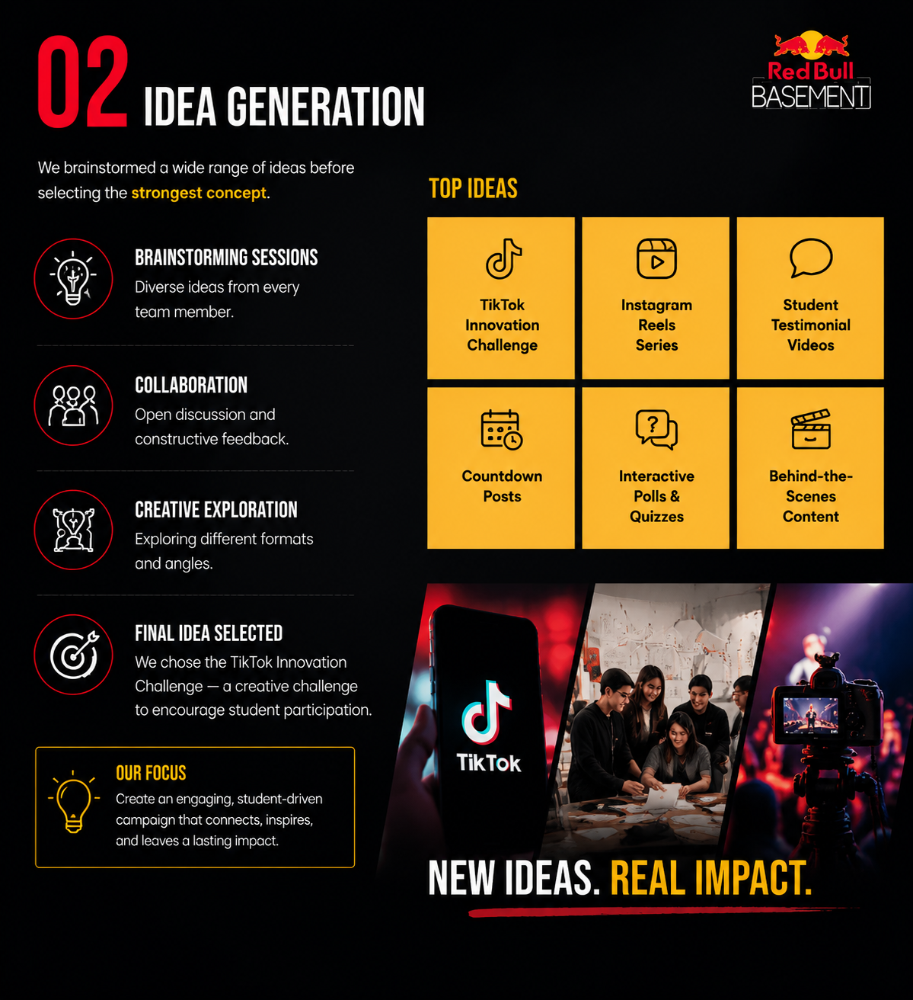
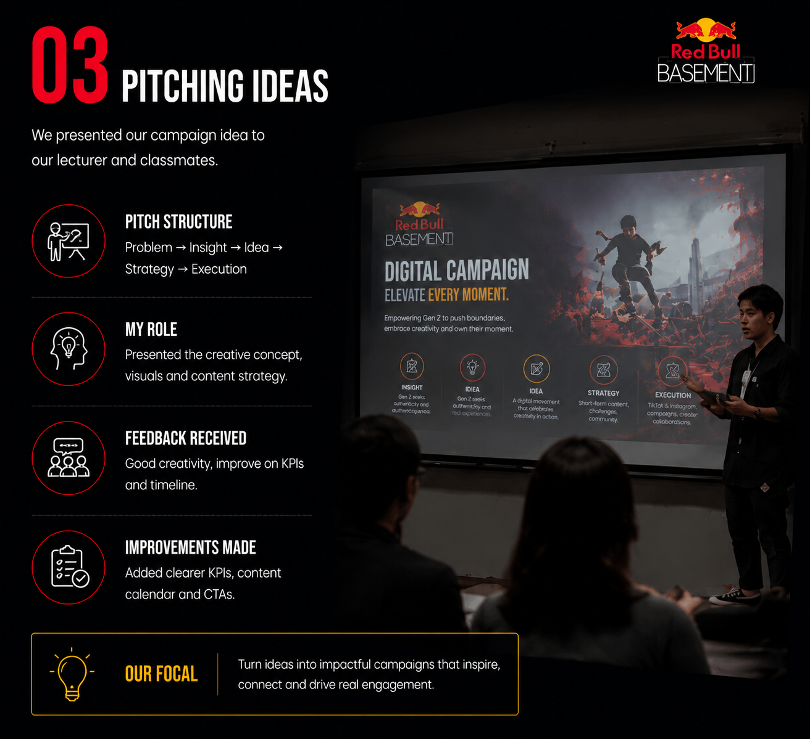
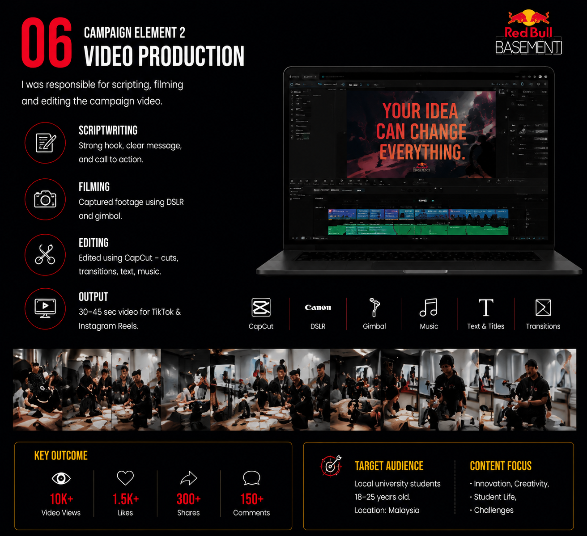
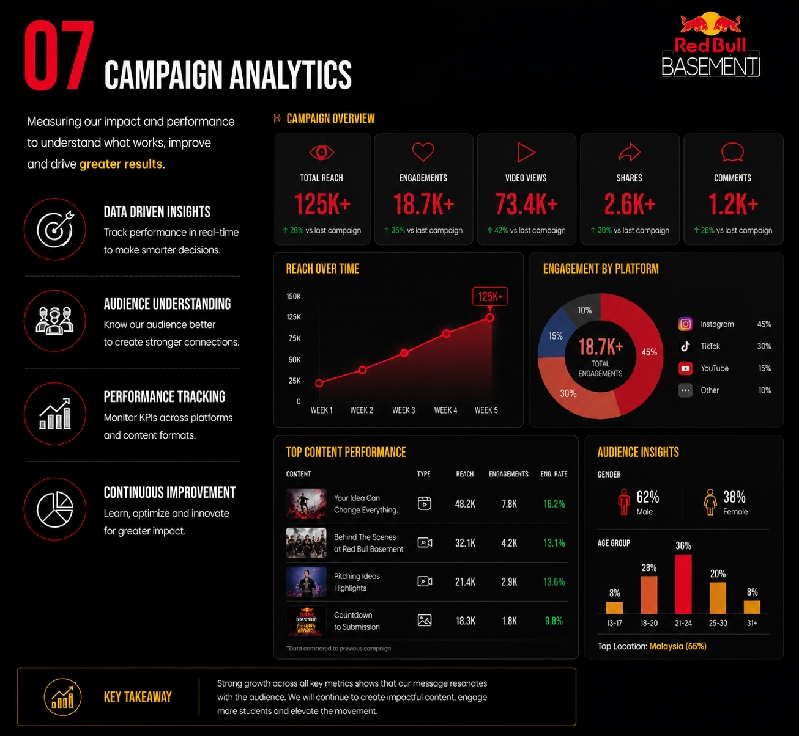
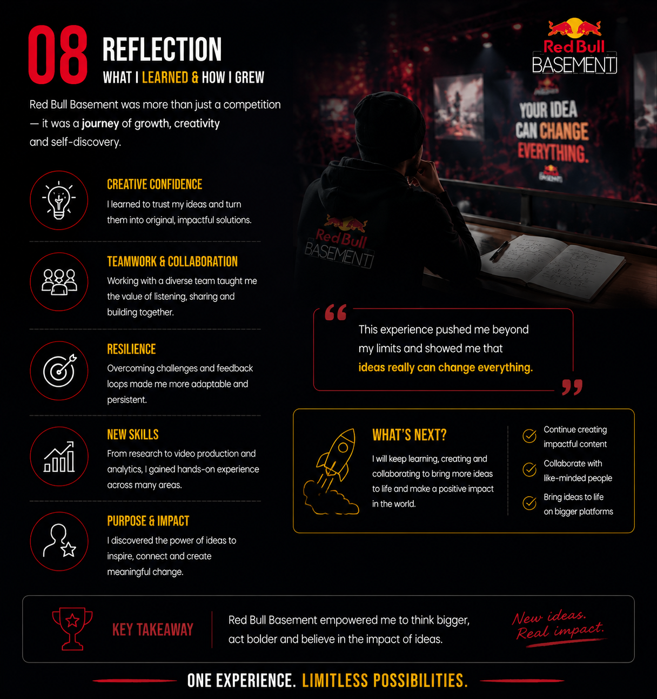

Home

This e-portfolio documents my contributions as Social Media Copywriter, Graphic Designer, and Photographer in the Red Bull Basement University Digital Campaign.
I created visuals, photography, and social media content targeting university students and Gen Z audiences.
Background Research

Studied Red Bull Basement, student innovation, Gen Z digital behavior, and social media campaign effectiveness. Sources: Statista, HubSpot, Mintel, WARC, and academic journals.
Idea Generation

Brainstormed and collaborated with the team. Generated ideas including TikTok innovation challenges, Instagram Reels, student testimonial videos, and interactive polls. Final campaign idea selected based on audience engagement potential.
Pitching Ideas

Presented the campaign to peers and mentors. Incorporated feedback to refine visuals, copywriting, and content layout.
Social Media Design

Created Canva templates, Instagram layouts, typography, and color palettes. Photography assets were integrated into social media designs.
Video Production

Contributed photography and visuals to campaign videos. Assisted in scripting, filming, and editing to ensure consistent visual branding.
Video showcasing content creation, filming, and editing for the campaign.
Audience Research & Analytics

Conducted audience surveys, engagement analysis, and KPI planning. Ensured visuals and copywriting were tailored to Gen Z preferences.
Personal Reflection

Reflected on teamwork, creative process, and personal skill development in photography, graphic design, and social media content creation.
References
HubSpot, Statista, Mintel, WARC, Academic Journals.